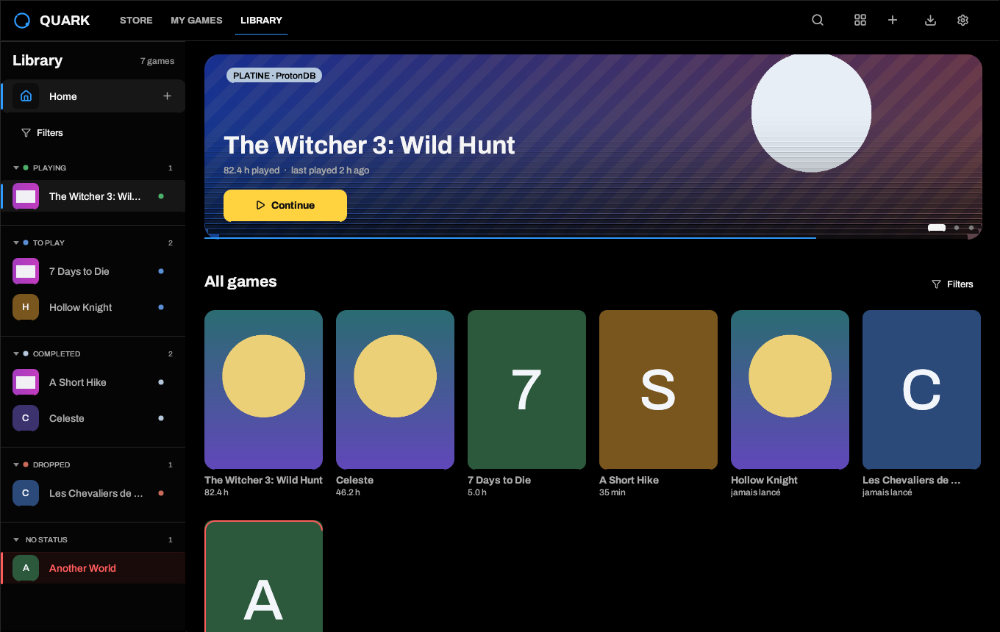
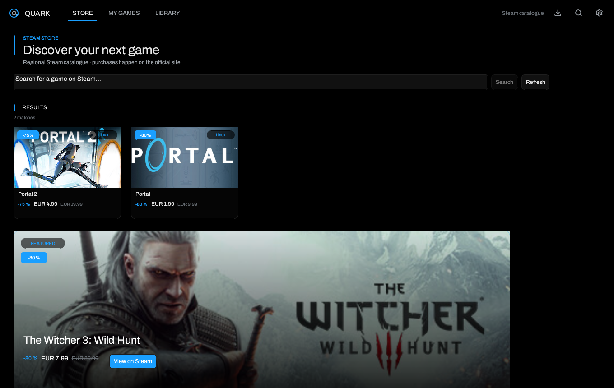
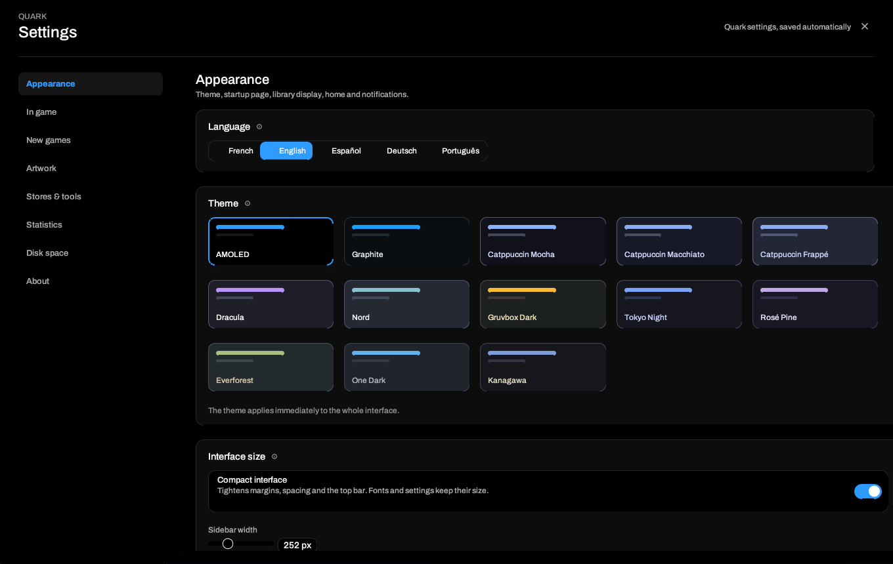
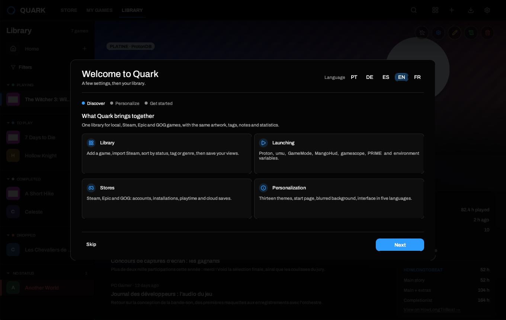

One library
Local folders and store games share covers, notes, tags, status, playtime and statistics. A game with several editions stays one entry.
Linux · Rust · egui
Quark gathers local games, Steam, Epic Games and GOG in one fast library. It handles Proton, saves and playtime, then gets out of the way.
Free and open source · MIT licence · Linux x86_64

The essentials
Local folders and store games share covers, notes, tags, status, playtime and statistics. A game with several editions stays one entry.
Read your Steam libraries, sign in to Epic directly, and install or update GOG titles through gogdl. Accounts stay on your machine.
Per-game runtimes, prefixes, GameMode, MangoHud, gamescope, PRIME offload and wrapper commands, all in plain checkboxes.
Open the in-game panel with Shift+Backspace, read achievements, take an F12 screenshot, or enable a small DXGI FPS counter.
Ludusavi snapshots before and after a session, with a preview, an inventory and a validated restore path.
Thirteen AMOLED-friendly themes, list or grid, a home carousel, adjustable density and five interface languages.
A closer look
Real screenshots from the current interface, not mockups.



In game
The overlay opens above a Proton game, stays mouse-transparent while
closed and hides as soon as the game loses focus. The FPS counter
uses small d3d11.dll and dxgi.dll proxies
for DirectX 11 and 12 games.
Vulkan, OpenGL and native Linux games are outside the DXGI proxy. For those, Quark exposes MangoHud in the per-game launch options.
Get started
Download the latest Linux archive, verify it, unpack it and run it.
# after downloading the archive
sha256sum -c quark-<version>-linux-x86_64.tar.gz.sha256
tar -xzf quark-<version>-linux-x86_64.tar.gz
./quark/quarkGood to know
No. It opens store pages in your browser and never buys anything.
No telemetry. Store sessions and library data stay on your machine.
Quark launches them through Proton or umu-launcher, with your chosen prefix.
Yes. Clone the repository and run cargo build --release --locked.